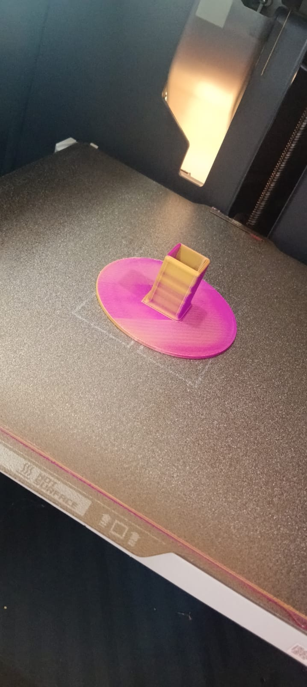
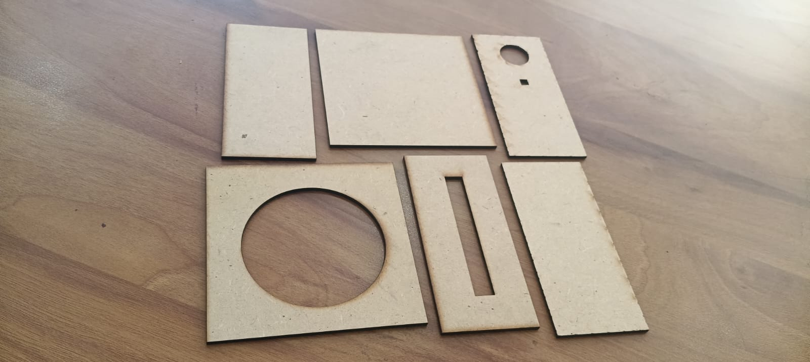
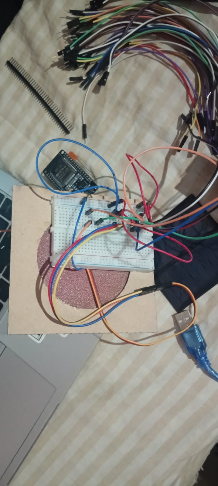
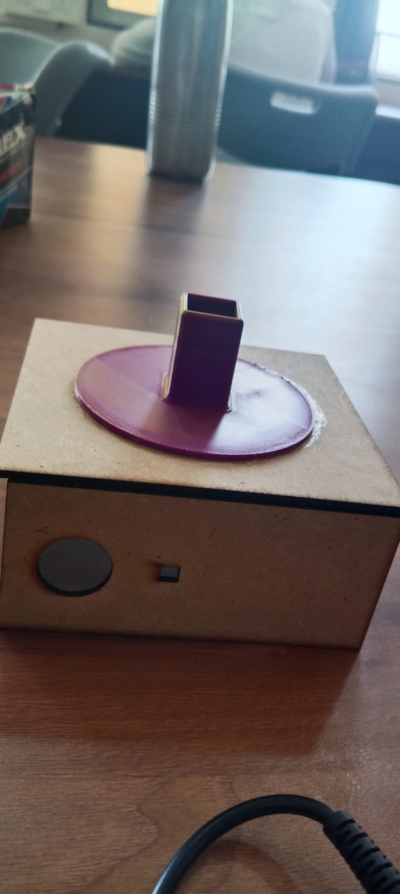
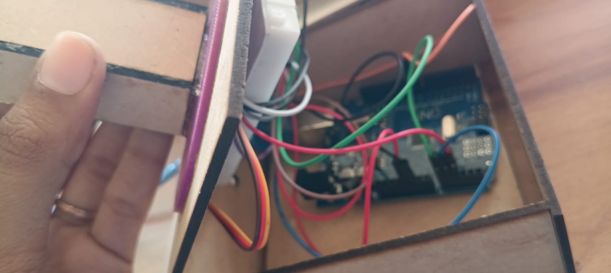
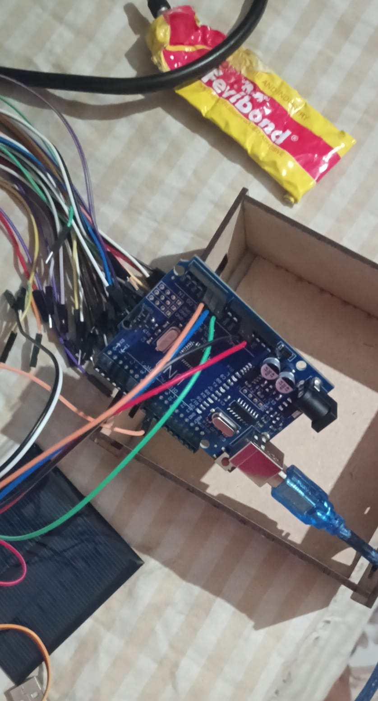
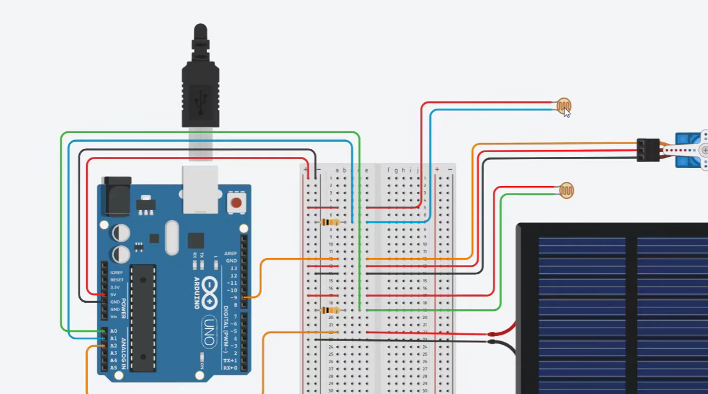
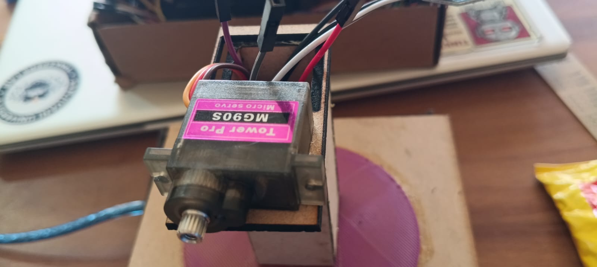

Week 4 marked the most intensive and hands-on phase of the internship. The focus shifted entirely from design and planning to physical implementation and testing. All major hardware fabrication activities — including 3D printing of structural components, laser cutting of mounting panels, wiring of the complete circuit, full system assembly, and programming in Arduino IDE — were completed this week. Functional testing of the servo motor and LDR sensors was carried out to validate real-world system performance.


Custom structural parts required to mount the servo motor and solar panel were designed and 3D printed, ensuring precise alignment of the panel with the tracking mechanism.
- Designed enclosure and mounting bracket for the servo motor
- 3D printed support frames for the solar panel holder
- Ensured dimensional accuracy for proper assembly fit
- Post-processed and finished printed parts for smooth assembly

Laser cutting was used to fabricate flat structural panels and mounting plates with high precision, providing clean edges and accurate cutouts for housing electronics and supporting the solar panel.
- Designed cutting patterns for mounting panels and the tracker base
- Laser cut acrylic/wood sheets for base and panel holders
- Verified dimensional accuracy of cut pieces before assembly


The complete circuit for the solar tracker was wired on a breadboard and secured for final assembly. All components were connected per the circuit schematic.
- Connected two LDR sensors with 10kΩ pull-down resistors to Arduino analog inputs
- Wired SG90 servo motor to Arduino Pin 9 (signal), 5V (power), and GND
- Connected solar panel output to an Arduino analog input for voltage monitoring
- Linked Arduino 5V and GND pins to the breadboard power rails
- Used male-female jumper wires for flexible connections between breadboard and tracker

All 3D-printed, laser-cut, and electronic components were integrated into a single functional unit. The tracker was assembled with all parts securely mounted.
- Mounted Arduino and breadboard on base using double-sided foam tape
- Built popsicle stick support structure to hold the servo motor vertically
- Attached servo horn and frame to support the solar panel
- Mounted a vertical cardboard divider above the solar panel to shade one LDR at a time
- Glued one LDR to each side of the vertical divider, facing upright
- Secured all wiring with zip ties and twist ties to prevent disconnection during motor rotation


The firmware for the solar tracking system was written and uploaded using the Arduino IDE. The code controls the servo motor based on differential readings from the two LDR sensors.
- Wrote code to read analog values from both LDR sensors
- Implemented logic: if LDR difference exceeds threshold (margin = 50), servo rotates toward brighter side
- Used Serial Monitor to print real-time LDR values and servo angle for debugging
- Adjusted 'margin' variable to fine-tune motor sensitivity
- Added solar panel voltage reading code to Serial Monitor output for performance tracking
- Tested sweep example code to verify motor rotation range before deploying tracker code

Functional testing of the servo motor and both LDR sensors was carried out to confirm correct operation before full integration.
- Covered each LDR individually to confirm sensor values dropped in the Serial Monitor
- Verified servo motor rotated when one LDR was shaded and held still with equal light
- Tested the system in direct sunlight to validate real-world tracking behavior
- Adjusted resistor values when sensor readings appeared saturated (near 0 or 1000)
- Confirmed all wire connections remained secure during full servo sweep rotation

A solar panel with output ≤ 5V was integrated into the system for live voltage monitoring via the Arduino.
- Connected solar panel positive (red) wire to an Arduino analog input
- Connected negative (black) wire to the ground bus
- Monitored output voltage in real time via the Arduino Serial Monitor
- Observed voltage variation as the panel moved between perpendicular and angled positions
| # | Tool / Component | Purpose |
|---|---|---|
| 01 | Arduino UNO | Microcontroller — processing sensor data & controlling servo |
| 02 | Arduino IDE | Writing, compiling, and uploading the tracker firmware |
| 03 | LDR Sensors ×2 | Light detection for tracking the sun's position |
| 04 | SG90 Servo Motor | Rotating the solar panel to follow the sun |
| 05 | Solar Panel (≤5V) | Energy source & real-time voltage performance measurement |
| 06 | 3D Printer | Fabrication of structural mounting and support components |
| 07 | Laser Cutter | Precision cutting of base panels and mounting plates |
| 08 | Breadboard & Jumper Wires | Circuit prototyping and flexible wiring |
| 09 | 10kΩ Resistors | Pull-down resistors for LDR voltage divider circuit |
| 10 | Serial Monitor | Real-time debugging and sensor value observation |

| Challenge Faced | Solution Applied |
|---|---|
| LDR values saturated (always near 1000) | Replaced 10kΩ resistors with smaller resistors to balance the voltage divider |
| Servo motor moved too frequently due to light fluctuations | Increased 'margin' threshold variable in the Arduino code |
| Wires came loose during servo rotation | Secured wires using zip ties on base; left flexible loops between anchor points |
| LDR leads did not fit securely into jumper wires | Crimped leads using needle-nose pliers for secure electrical connection |
| 3D printed parts had minor dimensional mismatch | Post-processed and sanded parts for proper fit before final assembly |
- Gained hands-on experience with 3D printing workflows for engineering prototypes
- Understood laser cutting as a precision fabrication technique for structural panels
- Learned practical circuit wiring — voltage dividers, servo motor connections, analog sensor interfacing
- Developed proficiency in Arduino IDE — writing, debugging, and uploading embedded C firmware
- Understood LDR-based light sensing and differential comparison for directional tracking
- Observed the direct relationship between solar panel orientation and output voltage
- Developed systematic hardware debugging skills — loose connections, saturated sensors, motor jitter
- Understood trade-offs between single-axis vs. dual-axis solar trackers in complexity and performance
| Activity | Status | Remarks |
|---|---|---|
| 3D Printing | ✓ DONE | All structural parts printed and post-processed |
| Laser Cutting | ✓ DONE | Panels cut with accurate dimensions |
| Wiring & Circuit | ✓ DONE | All components connected and verified |
| System Assembly | ✓ DONE | Full tracker unit assembled and secured |
| Arduino Coding | ✓ DONE | Firmware uploaded; tracking logic working |
| Motor Testing | ✓ DONE | Servo responding correctly to LDR inputs |
| LDR Testing | ✓ DONE | Both sensors tested and calibrated |
| Solar Panel Integration | ✓ DONE | Voltage monitoring working via Serial Monitor |
I hereby declare that the activities mentioned above are a true and accurate account of work carried out during Week 4 of my internship at Sanjivani University under the guidance of Dr. Kiran Wakchaure Sir.